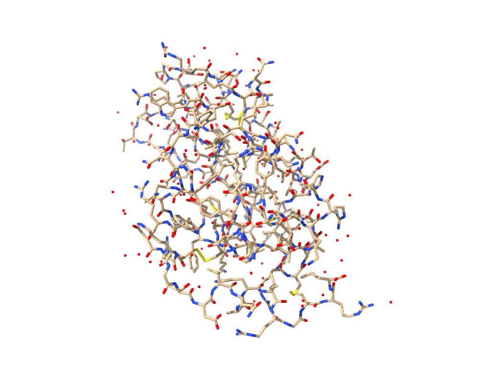

Getting Started with OpenMM¶
Introduction¶
OpenMM is a high-performance toolkit for molecular dynamics simulations. This series of tutorials is designed to walk you through the basic steps of using OpenMM to set up and run simulations. Once you have familiarized yourself with these basics, you can consult the list of more advanced tutorials to learn how to accomplish more specific simulation tasks.
Before beginning, it is useful to understand a bit about the architecture of OpenMM. The core OpenMM library is written in C++, and the OpenMM C++ API can be used directly to invoke OpenMM from C++ programs. However, OpenMM provides wrappers for other languages as well, such as the OpenMM Python API. These tutorials demonstrate how to use OpenMM from its Python API, not only due to the convenience of working with OpenMM from within Python, but also due to additional OpenMM features that are only available from Python. In particular, the Python API consists of both:
A lower-level “library layer” that directly wraps OpenMM’s C++ interface and provides tools for building customized molecular simulation scripts, libraries, and applications from scratch, and
A higher-level “application layer” that provides various tools for loading and applying commonly used molecular force fields, reading and writing common trajectory and topology file formats, and reporting properties during simulation runs.
In general, there are three primary methods of using OpenMM to set up and run molecular simulations:
Load a molecular topology, use OpenMM to modify it as needed, parameterize it with a force field, and simulate it. This is the simplest method to perform straightforward simulations of biomolecules in OpenMM. For example, if you have a PDB file with the structure of a particular protein, and you want to solvate it and simulate it with a standard Amber or CHARMM force field, this is the easiest method to do so. This method uses OpenMM’s application layer.
Use some external programs or tools (e.g., LEaP from AmberTools, or CHARMM-GUI, to do your modeling and parameterization, and load the resulting input files into OpenMM for simulation. This method can be convenient if your desired modeling workflow is more complex than what OpenMM currently supports, or you wish to use a force field that hasn’t been ported to OpenMM’s native format. It also uses OpenMM’s application layer.
Use OpenMM’s library layer to build a molecular system from scratch. This is the most general and flexible way to use OpenMM, but requires you to explicitly define all of the necessary potential energy terms and parameters for the atoms, bonds, angles, torsions, etc. in your simulation, unlike the other methods that handle this setup automatically given a topology and a predefined force field. This approach can be useful to build more complex systems when complete control over system setup is required. However, it is most useful for studying simple model systems like Lennard-Jones fluid mixtures, bead-spring polymers, and simple coarse-grained models.
These approaches are not completely exclusive: for instance, it is possible to use OpenMM’s application layer to set up a simulation, and then use the library layer to make manual modifications before running it. However, understanding the basics of these methods is useful for understanding how to build more complex simulation workflows with OpenMM, so these introductory tutorials will walk through each of them in turn. The tutorials will not describe in extensive detail the use of external programs, such as Amber and CHARMM, for system setup. When they discuss how to use OpenMM to run simulations that have been set up using other tools, links to relevant documentation for these tools will be given. Furthermore, they will not describe in detail the basic theory behind molecular simulations, or discuss how to perform more advanced analysis of simulation results beyond extracting basic thermodynamic properties. For links to resources on related topics not covered directly in these tutorials, refer to the Further Reading section of this and other tutorial notebooks.
Installing and Importing OpenMM¶
The most straightforward ways to install OpenMM are through either conda-forge or PyPI. If you are using conda, then
conda install -c conda-forge openmm
is all you need to get started, but more detailed instructions and a more comprehensive list of installation options can be found in the OpenMM user manual.
If you are following along with this notebook in Google Colab, then a cell has been inserted at the top of the notebook with commands to automatically install OpenMM into the Colab environment.
Once OpenMM is installed, you can import it in a Python script or Python interactive session:
[1]:
import openmm
Doing so only gives access to the library layer of the Python API. To access the application layer that we will mainly be using in this tutorial, and OpenMM’s units API that we will discuss later, use:
[2]:
import openmm.app
import openmm.unit
Next, for this tutorial, we will import some additional packages that will be used later. Note that these are not necessary for using OpenMM; they are just employed here for convenience.
[3]:
import collections
import matplotlib.pyplot
import numpy
Loading a Topology¶
This tutorial walks through the first of the three methods described above for using OpenMM. In particular, we will see how to load a protein structure into OpenMM, clean up and prepare the structure for simulation, add solvent, specify a force field, and run a simulation. In this example, we will use a structure of hen egg white lysozyme from the Protein Data Bank with PDB ID 1AKI. The structure can be downloaded in PDBx/mmCIF format as 1AKI.cif from the linked PDB entry; this file is also provided with this tutorial.
To load this file in OpenMM, we can use the PDBxFile class:
[4]:
pdbx = openmm.app.PDBxFile("1AKI.cif")
OpenMM supports loading several other kinds of commonly used file formats, including, for example files in the legacy (but ubiquitous) PDB format using PDBFile.
The object produced by loading the file has a positions attribute, with the actual coordinates contained in the file, as well as a topology attribute:
[5]:
pdbx.topology
[5]:
<Topology; 2 chains, 207 residues, 1079 atoms, 1025 bonds>
OpenMM Topology objects contain information about the identity and connectivity of the particles in a molecular system. Topology objects arrange their data hierarchically, with each Topology containing a list of chains, each chain a list of residues, and each residue a list of atoms. For biopolymers such as proteins, OpenMM’s concepts of chains and residues generally map onto their standard meanings in this context. More generally, a residue in a Topology represents a set of atoms that is used by OpenMM to assign simulation parameters from a force field (this is discussed in more detail later). Chains in a Topology provide a convenient way to collect related residues; they are useful to group residues that make up subsets of atoms in a larger molecule.
If we load the structure into a molecular visualization program, we can see that it is missing hydrogen atoms, and contains additional oxygen atoms at the positions of water molecules that are present in the crystal structure of the protein:

We can also see this programmatically using OpenMM by looking at the names of residues (HOH residues are the water molecules) and the elements of atoms in the Topology:
[6]:
import collections
collections.Counter(residue.name for residue in pdbx.topology.residues())
[6]:
Counter({'HOH': 78,
'ASN': 14,
'GLY': 12,
'ALA': 12,
'ARG': 11,
'SER': 10,
'CYS': 8,
'LEU': 8,
'ASP': 7,
'THR': 7,
'LYS': 6,
'VAL': 6,
'TRP': 6,
'ILE': 6,
'PHE': 3,
'TYR': 3,
'GLN': 3,
'GLU': 2,
'MET': 2,
'PRO': 2,
'HIS': 1})
[7]:
collections.Counter(atom.element for atom in pdbx.topology.atoms())
[7]:
Counter({<Element carbon>: 613,
<Element oxygen>: 263,
<Element nitrogen>: 193,
<Element sulfur>: 10})
Before running a simulation, we will want to remove the water molecules present in the structure (so that we can replace them later with a solvent consisting of both water and ions), and we will want to add the necessary hydrogen atoms to the structure.
Preparing the System¶
The issues described above can be commonly encountered when setting up simulations with structures from the Protein Data Bank. OpenMM contains some simple modeling tools to address them. To use these tools, create a Modeller object from a Topology and positions:
[8]:
modeller = openmm.app.Modeller(pdbx.topology, pdbx.positions)
First, we can clean up the structure by removing the existing water molecules:
[9]:
modeller.deleteWater()
At any time, we can access the current Topology in the Modeller object. We can see that the residues corresponding to the water molecules are now gone:
[10]:
collections.Counter(residue.name for residue in modeller.topology.residues())
[10]:
Counter({'ASN': 14,
'GLY': 12,
'ALA': 12,
'ARG': 11,
'SER': 10,
'CYS': 8,
'LEU': 8,
'ASP': 7,
'THR': 7,
'LYS': 6,
'VAL': 6,
'TRP': 6,
'ILE': 6,
'PHE': 3,
'TYR': 3,
'GLN': 3,
'GLU': 2,
'MET': 2,
'PRO': 2,
'HIS': 1})
In order to go further, we need to specify a force field that defines bonded and non-bonded interaction parameters that specify the potential energy of configurations of our system. In the OpenMM application layer, force fields work by matching residue templates in the force field to residues in a Topology. A residue must have the correct number of atoms of each element, and the correct bonds between them as well as to other residues, to match a residue template in a force field. OpenMM provides several commonly used force fields for biomolecular simulations; these are described in the user guide. Choosing an appropriate force field for your research problem is outside of the scope of this tutorial, but you should be aware of the behavior of the force field you choose and any limitations it has that might be applicable to your system.
Here we will use what OpenMM refers to as the “Amber19” force field, which includes the Amber ff19SB force field for proteins, among others. To load a force field, create a ForceField object with paths to XML files defining the templates and parameters for the force field:
[11]:
ff = openmm.app.ForceField("amber19-all.xml", "amber19/opc3.xml")
We do not need to place these files in the current working directory to load them. OpenMM tries to look up the force field files using the paths provided first, and if they cannot be found, looks in its data directories for them. Since we are using force fields that are distributed with OpenMM, they are loaded from the data directory that can be found at openmm/app/data wherever the OpenMM Python API has been installed. Note that in addition to Amber19, we have loaded parameters for the OPC3
water model (and ions) that are compatible with it.
With a ForceField, Modeller can now add hydrogens to its Topology:
[12]:
modeller.addHydrogens(ff);
For more details and options to control how hydrogens are added, see the documentation for Modeller.addHydrogens().
Next, we need to solvate the protein. We previously removed water molecules from the loaded structure. Now, we will add them back, along with ions, using Modeller:
[13]:
modeller.addSolvent(ff, padding=1.0 * openmm.unit.nanometer, ionicStrength=0.1 * openmm.unit.molar)
There are many options to the Modeller.addSolvent() method, but in the basic way that we have used it here, it will set up a periodic box and add water around the protein such that no atom in the protein will come closer than the specified padding distance to any atom in a periodic copy of the protein. (For more information about how periodic boundary conditions
work in OpenMM, consult the entry in the Frequently Asked Questions.) It will also add ions to neutralize the system and achieve the specified ionic strength. By default, the ions used are \(\ce{Na+}\) and \(\ce{Cl-}\), but the positiveIon and negativeIon parameters to addSolvent() allow this to be changed.
You may notice that we have passed quantities with units as arguments to Modeller.addSolvent(). OpenMM’s Python API supports automatic unit conversions and dimension checking through the openmm.unit package. If raw values without units are provided to OpenMM, it will assume that they are appropriately dimensioned quantities in OpenMM’s default unit system. However, always using the units API can help prevent unit conversion mistakes. More information can be found in the user guide.
Finally, we have a topology that is ready for simulation, with all of the added atoms that we need, and periodic box vectors set:
[14]:
modeller.topology
[14]:
<Topology; 3 chains, 7044 residues, 22641 atoms, 15750 bonds>
[15]:
modeller.topology.getPeriodicBoxVectors()
[15]:
(Vec3(x=6.199413656965853, y=0, z=0), Vec3(x=0, y=6.199413656965853, z=0), Vec3(x=0, y=0, z=6.199413656965853)) nm
Besides hydrogen atoms, Modeller can be used to add extra particles for force fields that require them, e.g., virtual sites for 4- and 5-site water models, and Drude sites for polarizable force fields. Modeller can also add lipid bilayers, which is useful for simulations of proteins embedded in membranes. For more complex structure preparation and setup tasks, you may need to employ external tools. For PDB structures that require more work than simply adding hydrogen atoms, PDBFixer may be helpful. It can add heavy atoms and even loops of residues missing from protein structures, remove unwanted molecules, and more.
Running a Simulation¶
Once we have Topology and ForceField objects, we can create an OpenMM System using the ForceField.createSystem() method. The documentation describes the many options that this method can take, but here we show just the most important ones:
[16]:
system = ff.createSystem(modeller.topology,
nonbondedMethod=openmm.app.PME,
nonbondedCutoff=1.0 * openmm.unit.nanometer,
constraints=openmm.app.HBonds)
The nonbondedMethod argument controls how nonbonded interactions between atoms will be computed. PME is the particle mesh Ewald method, which is usually preferable when the system you are simulating has charges and uses periodic boundary conditions. The nonbondedCutoff distance specifies a cutoff for Lennard-Jones interactions, and controls the splitting between Coulomb interactions computed in direct vs. reciprocal space. More information about the theory used by OpenMM to compute
these interactions can be found in the user guide. The value of 1 nm selected here is also the default. The constraints argument controls which interparticle distances in a simulation OpenMM will apply rigid constraints to. The HBonds option selects all bonds to hydrogen atoms, which typically have large force constants and thus generate high-frequency motion. Constraining them to fixed distances
allows the simulation to use a larger timestep while still remaining stable.
The System object created contains all of the atoms in the topology, as well as OpenMM Force objects defining the interactions between them. These Force objects are created by the ForceField when it matches residue templates to residues in the Topology and assigns parameters.
[17]:
system.getNumParticles()
[17]:
22641
[18]:
system.getForces()
[18]:
[<openmm.openmm.HarmonicBondForce; proxy of <Swig Object of type 'OpenMM::HarmonicBondForce *' at 0x11a7bf3c0> >,
<openmm.openmm.NonbondedForce; proxy of <Swig Object of type 'OpenMM::NonbondedForce *' at 0x10f495500> >,
<openmm.openmm.PeriodicTorsionForce; proxy of <Swig Object of type 'OpenMM::PeriodicTorsionForce *' at 0x10f495650> >,
<openmm.openmm.CMAPTorsionForce; proxy of <Swig Object of type 'OpenMM::CMAPTorsionForce *' at 0x10f495710> >,
<openmm.openmm.CMMotionRemover; proxy of <Swig Object of type 'OpenMM::CMMotionRemover *' at 0x10f495560> >,
<openmm.openmm.HarmonicAngleForce; proxy of <Swig Object of type 'OpenMM::HarmonicAngleForce *' at 0x10f490990> >]
Here, we can treat the System object largely as a black box that describes to OpenMM how to calculate the energy and forces for a given set of positions of the atoms in our structure. In a later tutorial, we will see how to build a System and set up Force objects from scratch, without using a predefined ForceField.
To perform molecular dynamics simulations, we need to select an integration algorithm. In OpenMM, we do so by creating an Integrator object. Subclasses of Integrator define specific integration algorithms. Here, we will use the LangevinMiddleIntegrator, which uses Langevin dynamics to simulate a System and maintain its temperature at a fixed setpoint:
[19]:
integrator = openmm.LangevinMiddleIntegrator(300.0 * openmm.unit.kelvin, 1.0 / openmm.unit.picosecond, 0.004 * openmm.unit.picosecond)
The first parameter sets the temperature, the second sets the friction coefficient (in inverse time units), and the third sets the integration timestep. Choosing appropriate thermostat parameters is beyond the scope of this tutorial, but the timestep chosen here should work with the constraint option we selected earlier.
As is, the integrator will act as a thermostat, causing the total energy of the system to fluctuate in order to maintain the set temperature. However, the system volume will remain fixed. To perform a simulation at constant pressure instead, we will need to add a barostat:
[20]:
system.addForce(openmm.MonteCarloBarostat(1.0 * openmm.unit.atmosphere, integrator.getTemperature()));
OpenMM provides MonteCarloBarostat as a barostat that uniformly scales the size of the periodic box vectors. Other, anisotropic barostats are also available. Note that in addition to the desired pressure, we must pass the temperature set in the chosen thermostat to the barostat. Though the barostat does not also regulate the temperature of the system, this temperature must be specified so that the barostat can calculate the correct probability that a volume adjustment Monte Carlo move should be accepted.
We are now ready to put all of the pieces together and create an OpenMM Simulation object:
[21]:
simulation = openmm.app.Simulation(modeller.topology, system, integrator)
We can access the Topology, System, and Integrator for the Simulation as its topology, system, and integrator attributes. However, the Simulation has also created an OpenMM Context.
[22]:
simulation.context
[22]:
<openmm.openmm.Context; proxy of <Swig Object of type 'OpenMM::Context *' at 0x11f767360> >
Unlike a System, that just defines information about particles and the interactions between them, a Context stores all of the information about the state of a simulation, including particle positions and velocities. A System object acts somewhat like a template for creating Context objects, and one System could be used to create more than one Context if desired. The interaction parameters, and other properties, stored in a Context are dependent on the parameters set in the System when the Context was created. If changes are made to a System after a Context has been created from it, the Context will not automatically reflect these changes (although in certain cases, it is possible to update a Context with new parameters from a System).
You may have noticed that we only used the topology from our Modeller, and not its positions, when creating the System. Now that we have a Context, we can initialize it with the positions from the Modeller.
[23]:
simulation.context.setPositions(modeller.positions)
Although there should not be severe problems like overlapping particles in our initial positions, it is a good idea to run a local energy minimization before starting a simulation. The distances between protein atoms from the PDB structure might differ from their equilibrium values defined by the force field, and the solvent molecules added by the Modeller might not have optimal orientations. Minimizing the energy can prevent large initial forces that could otherwise destabilize a simulation. OpenMM makes this easy to do:
[24]:
simulation.minimizeEnergy()
OpenMM provides various options for reporting simulation results, which we will explore in more detail in the next tutorial. For now, we can simply use OpenMM’s StateDataReporter to print some basic information about our simulation to a file.
[25]:
simulation.reporters.append(openmm.app.StateDataReporter("simulation.log",
reportInterval=100,
time=True,
potentialEnergy=True,
temperature=True,
density=True))
At last, we can run some simulation steps:
[26]:
simulation.step(25000)
The format of the data file written by the StateDataReporter is very simple:
[27]:
!head simulation.log
#"Time (ps)","Potential Energy (kJ/mole)","Temperature (K)","Density (g/mL)"
0.4000000000000003,-414456.1200252739,101.29547329495789,0.9750766997706524
0.8000000000000006,-402315.4096746808,169.88594724723103,0.9842334648972402
1.2000000000000008,-393341.3418421857,211.74217284525682,0.9893346735050422
1.6000000000000012,-387354.3225855497,240.16775930792363,0.9909134900476821
2.0000000000000013,-382707.2542261747,255.91778495680424,0.9909134900476821
2.4000000000000017,-379220.9490103484,271.59592640283296,0.99424587932129
2.800000000000002,-376977.17452490446,280.29570038675007,0.9999559383003619
3.2000000000000024,-375428.06519079674,286.519293863457,1.0013580310820545
3.6000000000000028,-374121.08276892174,289.3392525058974,1.0013580310820545
We can plot the results to qualitatively assess how quickly these parameters approach equilibrium values:
[28]:
time, pe, temp, rho = numpy.loadtxt("simulation.log", delimiter=",").T
figure = matplotlib.pyplot.figure(figsize=(8, 3), layout="constrained")
axes_pe = figure.add_subplot(1, 3, 1)
axes_pe.plot(time, pe)
axes_pe.set_xlabel("Time (ps)")
axes_pe.set_ylabel("Potential energy (kJ/mol)")
axes_temp = figure.add_subplot(1, 3, 2)
axes_temp.plot(time, temp)
axes_temp.set_xlabel("Time (ps)")
axes_temp.set_ylabel("Temperature (K)")
axes_rho = figure.add_subplot(1, 3, 3)
axes_rho.plot(time, rho)
axes_rho.set_xlabel("Time (ps)")
axes_rho.set_ylabel("Density (g/mL)")
matplotlib.pyplot.show()
We can see that there is a relatively quick jump in the potential energy, temperature, and density as the system equilibrates. Of course, in a production simulation, a longer simulation time would be used, along with more advanced analysis to understand whether or not the structure of the protein is changing over time. The simulation is intentionally kept short for this tutorial, and more complex analysis is out of its scope.
Since the several steps taken in this tutorial are interspersed with additional commands to illustrate their results, the key commands that are actually important for running OpenMM are given in a self-contained script below:
import openmm
import openmm.app
import openmm.unit
# Load the input structure.
pdbx = openmm.app.PDBxFile("1AKI.cif")
# Delete existing waters, add hydrogens, and add solvent.
modeller = openmm.app.Modeller(pdbx.topology, pdbx.positions)
modeller.deleteWater()
ff = openmm.app.ForceField("amber19-all.xml", "amber19/opc3.xml")
modeller.addHydrogens(ff)
modeller.addSolvent(ff, padding=1.0 * openmm.unit.nanometer, ionicStrength=0.1 * openmm.unit.molar)
# Create a System, thermostatting Integrator, and barostat.
system = ff.createSystem(modeller.topology,
nonbondedMethod=openmm.app.PME,
nonbondedCutoff=1.0 * openmm.unit.nanometer,
constraints=openmm.app.HBonds)
integrator = openmm.LangevinMiddleIntegrator(300.0 * openmm.unit.kelvin, 1.0 / openmm.unit.picosecond, 0.004 * openmm.unit.picosecond)
system.addForce(openmm.MonteCarloBarostat(1.0 * openmm.unit.atmosphere, integrator.getTemperature()))
# Create a Simulation.
simulation = openmm.app.Simulation(modeller.topology, system, integrator)
# Minimize the energy of the initial configuration.
simulation.context.setPositions(modeller.positions)
simulation.minimizeEnergy()
# Set up logging and run the simulation.
simulation.reporters.append(openmm.app.StateDataReporter("simulation.log",
reportInterval=100,
time=True,
potentialEnergy=True,
temperature=True,
density=True))
simulation.step(25000)
Summary¶
After following this tutorial, you should now be able to use OpenMM to:
Load a PDBx/mmCIF file and perform basic modeling tasks like adding hydrogen atoms and a solvent box.
Set up a simulation at constant temperature and pressure and run an energy minimization.
Run molecular dynamics steps and set up OpenMM to write basic thermodynamic properties to an output file.
In the next tutorial, we will discuss various ways of getting data in and out of OpenMM. We will cover how to read input files in formats designed for other molecular dynamics engines like Amber, and how to get various kinds of data, including simulation trajectories, out of OpenMM while running a simulation.
Further Reading¶
Relevant sections of the User Guide:
Python API documentation pages for classes used in this tutorial:
Troubleshooting basics:
If you cannot even
import openmmfrom Python, make sure that you have followed the installation instructions carefully.If you can import OpenMM in Python, but are encountering problems running simulations, the OpenMM Frequently Asked Questions discusses some common errors and how to resolve them.
If the documentation does not address the problem you are having, feel free to ask for help on the OpenMM discussion board.